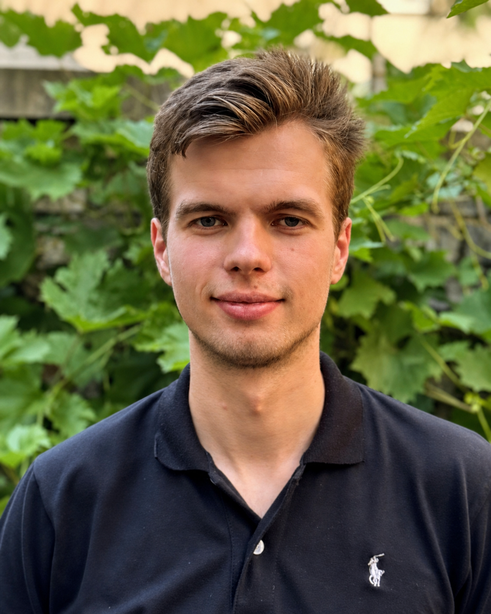

2026
2026
Machine Learning & Robotics · Karlsruhe
Hi, I’m Jakub Suliga. I am a Computer Science student and research assistant at the KIT Intuitive Robots Lab in Karlsruhe. My current research focuses on world models for robotics—learning representations of how the physical world evolves so robots can reason, plan and act within it.
My broader interests include world models, robot learning, embodied AI, and vision-language-action models.

Publications
Work Experience
Research and engineering across real-robot learning, simulation and multimodal policies.
Karlsruhe Institute of Technology
Guided students through practical software engineering coursework.
Education
Karlsruhe Institute of Technology
Planned focus on machine learning, world models and robotics.
Karlsruhe Institute of Technology
Computer Science studies with a focus on machine learning, robotics and software engineering.
Notes & Essays